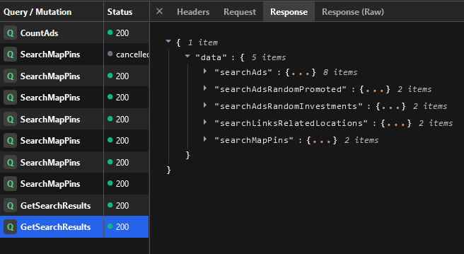
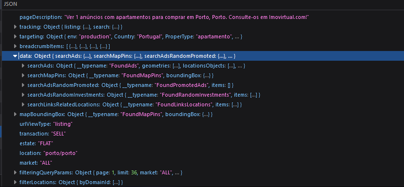
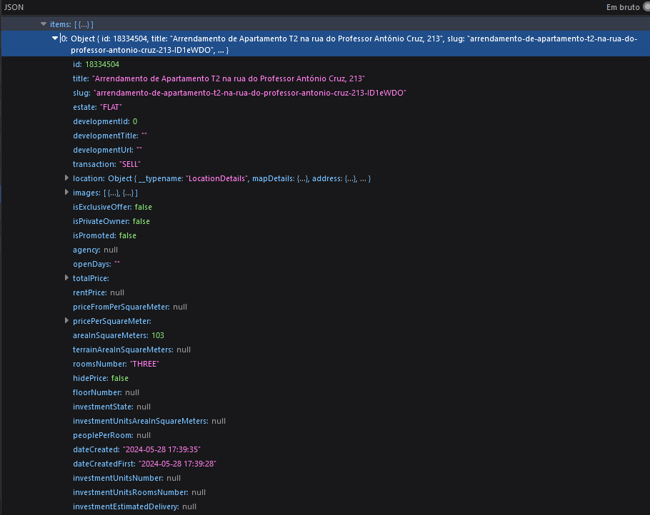

Scrapping imovirtual#
Introduction#
Imovirtual is another yet known portuguese online housing marketplace. These are some of the features of the website:
Built on Next.js (Modern stack)
Next js generates a build id for each application version
Server Side Rendering
Requests methods wont work with SSR
GraphQL endpoints
I built a custom open source imovirtual API to make create custom queries based on the filtering features available in the website. Link here ImovirtualAPI.
SSR (Server Side Rendering)#
In Traditional server rendering refers to the method where the server generates the complete HTML for a web page and sends it to the client (usually a web browser) upon request. This is a common approach used by many web frameworks like PHP, ASP.NET, and older versions of frameworks like Django and Ruby on Rails.
With Server Side Rendering in the context of modern frameworks involves generating the initial HTML of a web page on the server, but with a key difference: once the initial HTML is rendered and sent to the client, JavaScript takes over to make the page interactive and handle subsequent updates.
Usually the server sends a fully constructed DOM tree but with the key difference of empty elements. Instead, it has placeholders which are then populated by client side Javascript.
Something like this I assume.
GraphQL#
In contrast with other websites, Imovirtual uses GraphQL instead of traditional REST. GraphQL is the SQL for client server connections in web API’s. It ensures the client can request only the information it requires through a query language, instead of having to load all the information.
Graphql clients usually transmit queries through JSON documents which consist of two to three keywords: mandatory query and optional operationName and variables:
{
"operationName": "QueryName",
"query": "query QueryName($variable: VariableType) {
field1
field2
filedObject() {
field3
field4
}
}",
"variables": {
"variable": "europe"
}
}
Workflow#
[1] Get next js buildid
[2] Build a data catalog
[3] Scrape data
NextJS BuildID#
# Parse the HTML content
soup = BeautifulSoup(html_content, 'html.parser')
script_tag = soup.find('script', id='__NEXT_DATA__')
json_content = script_tag.string
data = json.loads(json_content)
build_id = data['buildId']
It’s very straightforward. We need to parse the build id from the static html code.
Build the data catalog#
GraphQL Network extension#
 |
|---|
GraphQL using GraphQL Network extension |
You can use the default browser network inspector as well but I found this extension much more helpful.
Endpoint for our purpose: GetSearchResults
My approach will be similar to the approach I used so far. I’m trying to keep compatibility between the datasets, let’s see how it works.
First I will create a data catalog with the hierarchical data of locations:
Building my own query#
query locationTree($locationId: String!) {
locationTree(locationId: $locationId) {
__typename
... on FoundLocationTree {
locationTreeObjects {
id
name
detailedLevel
sublocations {
id
detailedLevel
name
parentIds
__typename
}
__typename
}
__typename
}
}
}
This query is used to retrieve a hierarchical structure of locations starting from a given location ID. It returns detailed information about the location and its sublocations, including their IDs, names, detailed levels, and parent IDs.
Flatten the nested structured#
def flatten_df(data):
flattened_data = []
for location in data["data"]["locationTree"]["locationTreeObjects"]:
district, municipality = location["id"].split('/')
flattened_data.append({
"district": district,
"municipality": municipality,
"id": location["id"],
"name": location["name"],
"detailedLevel": location["detailedLevel"],
"parentIds": location.get("parentIds", [])
})
for sublocation in location.get("sublocations", []):
flattened_data.append({
"district": district,
"municipality": municipality,
"id": sublocation["id"],
"name": sublocation["name"],
"detailedLevel": sublocation["detailedLevel"],
"parentIds": sublocation.get("parentIds", [])
})
df = pd.DataFrame(flattened_data)
return df
Wrapping up#
Output: Data Catalog#
district |
municipality |
id |
name |
detailedLevel |
parentIds |
|---|---|---|---|---|---|
aveiro |
agueda |
aveiro/agueda |
Águeda |
council |
[] |
aveiro |
agueda |
aveiro/agueda/aguada-de-cima |
Aguada de Cima |
parish |
[] |
aveiro |
agueda |
aveiro/agueda/agueda-e-borralha |
Águeda e Borralha |
parish |
[] |
aveiro |
agueda |
aveiro/agueda/barro-e-aguada-de-baixo |
Barrô e Aguada de Baixo |
parish |
[] |
aveiro |
agueda |
aveiro/agueda/belazaima-do-chao-castanheira-do-vouga-e-agadao |
Belazaima do Chão, Castanheira do Vouga e Agadão |
parish |
[] |
aveiro |
agueda |
aveiro/agueda/fermentelos |
Fermentelos |
parish |
[] |
aveiro |
agueda |
aveiro/agueda/macinhata-do-vouga |
Macinhata do Vouga |
parish |
[] |
aveiro |
agueda |
aveiro/agueda/prestimo-e-macieira-de-alcoba |
Préstimo e Macieira de Alcoba |
parish |
[] |
aveiro |
agueda |
aveiro/agueda/recardaes-e-espinhel |
Recardães e Espinhel |
parish |
[] |
aveiro |
agueda |
aveiro/agueda/travasso-e-ois-da-ribeira |
Travassô e Óis da Ribeira |
parish |
[] |
aveiro |
agueda |
aveiro/agueda/trofa-segadaes-e-lamas-do-vouga |
Trofa, Segadães e Lamas do Vouga |
parish |
[] |
aveiro |
agueda |
aveiro/agueda/valongo-do-vouga |
Valongo do Vouga |
parish |
[] |
Parsing algorithm#
def fetch_imovirtual_data(csv_file_path: str, output_dir: str, headers: dict, base_url_template: str, get_buildid) -> None:
"""
Fetch data from Imovirtual website and save to JSON files.
Parameters:
- csv_file_path (str): Path to the CSV file containing the list of districts and IDs.
- output_dir (str): Directory where the JSON files will be saved.
- headers (dict): Headers for the HTTP requests.
- base_url_template (str): Template for the base URL used in the requests.
- get_buildid (callable): Function to get the build ID.
"""
df = pd.read_csv(csv_file_path)
df = df[df["detailedLevel"] == "parish"] # if you dont do this, returns will be duplicate due to hierarchical level
districts = df.groupby("district")['id'].apply(list).to_dict()
# Get the build ID
buildid = get_buildid()
# Iterate over each district and fetch data
for district, id_list in districts.items():
all_data = {}
for id in id_list:
url = base_url_template.format(buildid, id)
response = requests.get(url, headers=headers)
data = response.json()
all_data[id] = data["pageProps"]['data']['searchAds']['items']
num_pages = data["pageProps"]['tracking']['listing']['page_count']
# Fetch data from additional pages
for page in range(2, num_pages + 1):
paged_url = f"{url}?page={page}"
paged_response = requests.get(paged_url, headers=headers)
paged_data = paged_response.json()
all_data[id].extend(paged_data["pageProps"]['data']['searchAds']['items'])
time.sleep(5)
output_path = os.path.join(output_dir, f'{district}.json')
os.makedirs(os.path.dirname(output_path), exist_ok=True)
with open(output_path, 'w', encoding='utf-8') as f:
json.dump(all_data, f, ensure_ascii=False, indent=4)
Output#
 |
|---|
Output. |
 |
|---|
Output. |